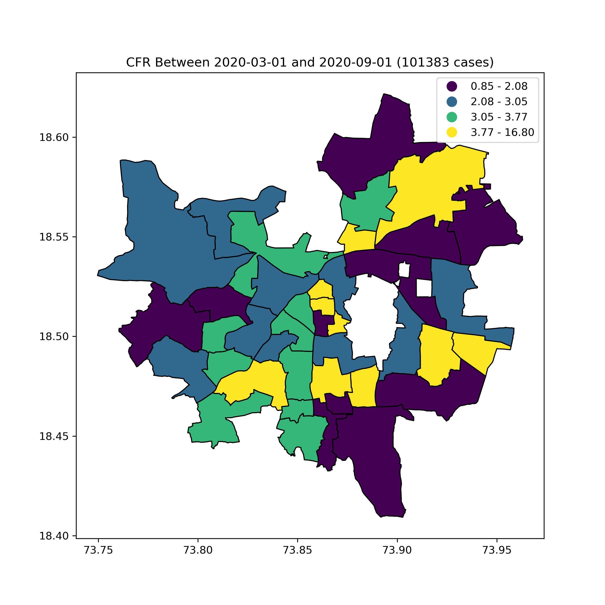
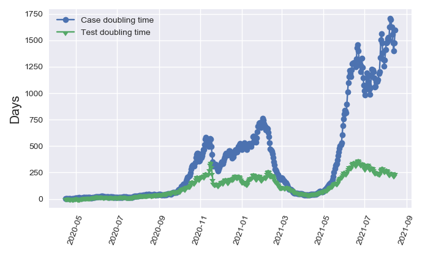

COVID-19 Data and Analysis
The Pune experience
Joy Merwin Monteiro
Earth and Climate Science
We are...
Pune — Dense and Urban
15000 sq. km pune.gov.in7000 sq. km, 7.2 million people
pmrda.gov.in
Timeline
Weekly Cases
"Construction" of data
All that gleams...
→

Challenges
- Information Silos
- Process rather than Person
- Digital Literacy: Curation for whom?
- Language
- Operational Pressures
Data!
- Transparency — not everything is politics
- Academics not (always) after publications
Viable
PMC-PKC Synergy
- Politicians, Press, Public
- Different data needed to study epidemic!
- Time and Ability
- Highly Skilled, Informed, Networked
Viable
Necessary
The Five stages of grief Epi-surveillance
1: Containment
Undetected cases
- Number of contacts traced
- Where to test?
- Lockdowns
- Case Fatality Rate, Test Positivity
CFR vs. TP
Incidence
CFR

Lockdown Effectiveness
Mave et al., (2021)
2: Outcomes
Disease Severity
- Ventilator/ICU requirements
- Hospitalization
- Comorbidity-Death Analysis
- Serosurvey and Infection Fatality Rate
Epidemiological Modelling
Hazra et al., 2021
Time spent in hospitals
Zhou et al., 2020
Serological Survey
Ghose et al., 2020
20-30x undercount (Aug 2020) of cases (not deaths!)
3: End of Wave
Markers
- Case vs. Test doubling time
- CFR
Doubling Times
CFR
4: Next Wave?
Early Warning
- Test Positivity
- R(t)
- Environmental Surveillance
Test Positivity
R(t)
5: Variants
Back to biology!
- Reinfections
- Vaccine breakthroughs
- Genomic data + Epi-surveillance
Summary of Activities
- Containment
- Outcomes
- End of wave
- Beginning of wave
- Variants
Way Forward
- Person, not process!
- Decentralised data sharing and analysis
- Platforms for collection, curation and analysis
- Human-in-the-loop design
References
- Hazra et al. 2021. “The INDSCI-SIM Model for COVID-19 in India.” MedRxiv.
- Zhou, et al. 2020. “Clinical Course and Risk Factors for Mortality of Adult Inpatients with COVID-19 in Wuhan, China: A Retrospective Cohort Study.” The Lancet 395 (10229): 1054–62.
- Ghose et al. 2020. “Community Prevalence of Antibodies to SARS-CoV-2 and Correlates of Protective Immunity in Five Localities in an Indian Metropolitan City.” MedRxiv, November, 2020.11.17.20228155.
- Mave et al. 2021. “Impact of National and Regional Lockdowns on Growth of COVID-19 Cases in COVID-Hotspot City of Pune in Western India: A Real-World Data Analysis.” MedRxiv, May, 2021.05.05.21254694.